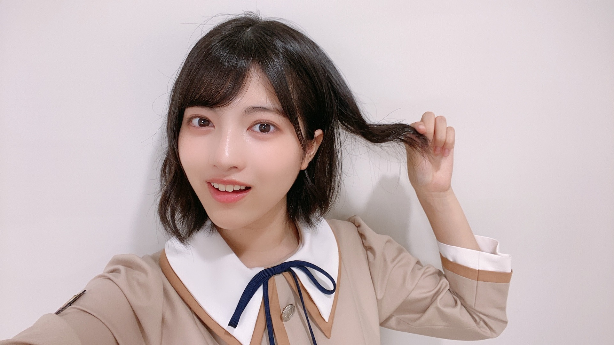
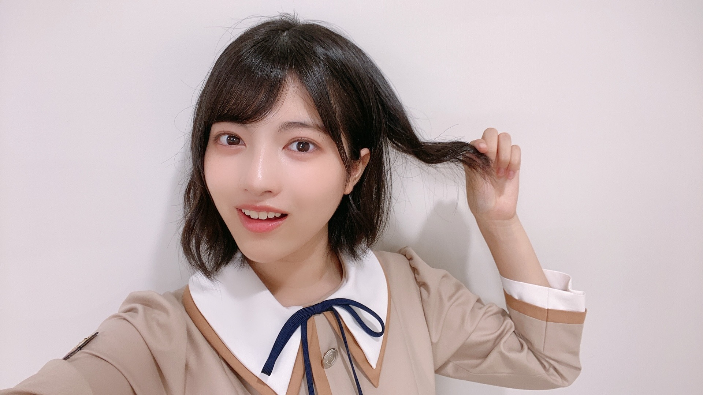

2020/0926Satお疲れ様です！質問に答えました。林瑠奈です。
乃木坂46(新)4期生の林瑠奈です。
神奈川県出身高校2年生16歳
華咲きそうなシックスティーンの林瑠奈です。
負けるなしょげるな林瑠奈、今日も1日頑張るな
(ピンポーン)


るなぴは、作るならどんなジャンルを作りたいですか？
私は、シューティングゲームを作ろうと思ってます！
A 恋愛シミュレーションゲームを作りたいです。
Q 最近よく聞く曲はありますか？
A あります。
Q 最近聴いてる曲教えてください！
A 最近というか、今波に乗って聴いているのは
ミオヤマザキさんの『LINK』です。
あとは永遠にボーカロイドの曲聴いてます。
Q あのね、良ければ聞いてほしいんだけどね、私今好きな人がいて、でもその人には他に好きな人がいて...
自分に自信つけてがんばろう！！って思うけどなかなかその人の好みに近づける気がしなくて...こーゆーときるなちゃんならどうしますか？
自信のつけ方とるなちゃんの好みのタイプ教えてください！！
A 自信の付け方、難しい質問ですね。
偶には自分中心になってみる、とかどうですか。
自信を無くしてしまう原因として、他人と自分を比べてしまうのは仕方のないことです。
でも、比べてしまった時点できっと自分に対して卑屈になってるじゃないですか。
だから、『あの人より全然できない、もう無理トイレに流れたい』じゃなくて、
『あの人が自分よりできただけ、基準はわたし』
比べるのはいいけど、基準を自分にしてみるのはどうですか。
"あの人より"じゃなくて、もっと自分のこと見てあげてくださいね。
好みのタイプってなんですか。
そうですね、ひとつ挙げるとしたら
『白目が綺麗にむけるひと』です。
いや、ふざけてないですよ。本気です。
Q いつもりかちゃんと何時間くらい電話してるの？
A そのときどきによりますよ。最近は断りを入れずに電話をかけてくれることが多くなりました。
嬉しいですね。
Q 女の子の好きな髪型は？
A 本当になんでも好きです。決められないですもん。
でも、普段前髪がある子が急におでこ出してる髪型にしたとき、あれめっちゃ好きです。
Q 日が沈む直前の空気の匂いにときめいて、息が苦しくなる事があります。林瑠奈さんは最近ときめいて息が苦しくなったことはありますか？
A ありますあります。毎日がときめきパレード。
Q 今一番ハマってることって何ー？
A オムライスの絵を描くこと。
オムライス大好きなんですよ、カレーライスもハヤシライスも好きです。
この三大ライス、色々な人に是非振る舞っていただきたいなと思ってます。
Q 料理名人の林が作った最近の料理は何ですか？？
A え、いつから料理名人になったんですか。
びっくりするぐらいできないですよ、料理。
わかりやすく例えると、ダンスよりも苦手なのが料理です。
あ、そういえば。
『もしはやしが一人暮らしするってなったら、道具とか全部不備なく揃えるから、ご飯作りにきてよ』
ってりかに言ったんです。そしたら、
『どうせ何人も連れ込んでるんでしょ、歯ブラシ10本ぐらいあるよ絶対』
って言われました。
さすがに歯ブラシ10本は無いですよね。ね？
Q 過去か未来に行けるタイムマシーンを一度だけ乗る事が出来るとなったらどちらに行きたいですか？
(補足ですが、行ったとしても自分自身に接触、助言等は出来ないものとします)
A 過去に行って、『凄い楽しい夏だった。でも未来に帰らないといけないんだ。』って言ってみたい。
Q イェイ！
なんで最後の挨拶アディオス！なの？？
他の言葉じゃだめなのー？
A イェイ！
沢山コメントしていただいてありがとうございます。
次回もやろうと思うので、是非また書いてください。
 

前回のブログのコメントでみなさんが褒めてくださった巻き巻き、他にも写真がありました。
...........................................................................
9月23日
寺田蘭世さん、お誕生日おめでとうございます！！
蘭世さんのファッションや言葉のセンスが大好きで、その芸術性にいつもわたしの心が惹かれています。
自分を奮い立たせるためだけでなく、誰かの心に響く。
蘭世さんの口から出る言葉ひとつひとつが、わたしにとって格言のようなもので、わたしの構成要素です。

PROFILE
新4期生リレー
202104
| SUN | MON | TUE | WED | THU | FRI | SAT |
|---|---|---|---|---|---|---|
| 1 | 2 | 3 | ||||
| 4 | 5 | 6 | 7 | 8 | 9 | 10 |
| 11 | 12 | 13 | 14 | 15 | 16 | 17 |
| 18 | 19 | 20 | 21 | 22 | 23 | 24 |
| 25 | 26 | 27 | 28 | 29 | 30 | |

コメント(228)
今日も可愛いるなぴが見れてすっごく元気でたよ！
これからも可愛いるなぴを見せてね！
質問って言うかお願いなんだけど、9月28日が私の誕生日なんだけどお祝いして欲しいなあって思ってるよ！お願いね！
アディオース！！！！
笑
セーラー服まぁじで似合っとるんですよ へい
質問返しありがとう
実はですね…私…白目めちゃくちゃ剥けるんですよ
いやぁ 偶然だなァ 運命かもなァ へい
ただのデコ出しじゃなくてそれまでの前髪があるからこそのデコ出しが最高なんすよね へい
三大ライス、これから披露される所がね あるとね いいね ﾊﾊｯ..
歯ブラシ10本あってもおかしくなさそうなのがるなPなんよ
11本目の女になりたいですわね 11人目のストライカーみたい へい
そのセリフはあれですやん 良いですやん イェイ！
巻き巻きまた見れると思わなかってん 最高最強でゃぁん
また質問書かせてもらいます！
アディオス！！！！！！
（こんにちは、るなぴ☆彡今日も、一日おうち時間を楽しんでるかいヽ(^o^)丿 そしてブログ更新ありがとう）
って、冒頭るなぴのいつもの締めの挨拶である「アディオス」にかけて僕も「スペイン語」で書いてみた(●´ω｀●)
今日は、土曜日だし珍しい時間のブログ更新だなぁ～って思って驚いてたところだよ(笑)( *´艸｀)
そして、るなぴもリレー形式ブログを始めてから早３１回目（一カ月丸々ブログ読めるくらい）な量になったんだねぇ～。月日が経つのは早いねぇ～♪
もう９月も終わりになっちゃうんだもんねぇ～。１２日前に僕もリアル誕生日を迎えて、るなぴよりも歳の離れたお兄ちゃんになってしまった( *´艸｀)
僕は先輩の３期ちゃんが乃木坂に加入した頃から見守っているけどさらにその後輩ちゃんである、４期ちゃんたち１６人の妹達の成長もみれて大満足だよぉ～。これからも、同期達と楽しくワチャワチャしながら、まだ見た事のないような景色をいろいろと見聞きしながら成長していってね☆彡
そして、「瑠璃色」コンビとしても大活躍しそうなるなぴだから、りかちゃんともこれからも「何でも話せる仲」になっていってね☆彡
今はブログというものが「目で見る握手会」・「文字で伝える握手会」になっていると僕は思ってるし、来月早々にも「４期ちゃん総出演でのＴＩＦ」に出るんでしょ( *´艸｀)♪ 今はリハ中でいろいろと大変かと思うけど、本番までは「体調不良で倒れることのないようにして」当日も、思いっきり楽しんできてね☆彡
それじゃあ、次のブログもめっちゃ楽しみにしてるねぇ～ヽ(^o^)丿また５日後に会おうね♪
今日も一日！一緒にお家時間を楽しもうね♪大好きだよ♪るなぴ☆彡
誕生日…もうすぐですね
少し早いですが、おめでとう(●´ω｀●)
ついに ✾ 華のセブンティーン ✾
ブログの自己紹介が シックスティーンじゃなくなっちゃうことに少し寂しさも覚えますが、
その何倍も何倍も"瑠奈ちゃんが誕生日を迎える"ということの嬉しさでいっぱいです!!
瑠奈ちゃんに出会ってから10月2日が大好きになりました。私にとっても特別な日になりました。
あの"ファンあるある"でもある
本人不在の誕生会 というものを初めてしてみようかな(笑)
ケーキ作って食べて､､(別にただ食べたいだけって訳じゃないからね…!)
楽しそうだからやってみます
10月2日は特に1日中、瑠奈ちゃんのことを考える日ということで!!
あ。でも瑠奈ちゃんはケーキとかよりシュークリーム派だったかな。
気になるので…唐突ですが
●!質問です!●
・瑠奈ちゃんは、ケーキなど甘いものは好きですか？
・甘いものだと何の種類のものが好きですか？
・今までの誕生日で、どんなものを貰ったり食べたりしましたか？印象に残るもので…!
瑠奈ちゃんにとってこの1年が
好きなこと楽しいことに たくさん出会える
幸せ溢れる素晴らしい1年になりますように。
素敵な"華咲くセブンティーン"になりますように。
いつも笑顔と元気をくれて本当にありがとう
瑠奈ちゃんこれからも
ずーっとずっと大好き
次のブログは1日。(birthday イブ!!)
そこでもまたコメント書くね。
あでぃおす!!
エッセイとか書いてほしいな、なんて思っちゃいます!
まきまきの髪可愛いです……
ノギザカスキッツとても面白かったです笑
テストが近いので頑張りたいと思います！
またブログ待ってますよ！
やっぱり前回のブログの丸めがねはノギスキでの衣装だったんですね!
お団子ヘアに丸めがね、だぼっとした可愛らしい洋服、全て凄く似合ってて、新鮮でめっちゃくちゃ可愛かったです
しかしその後、突如として公の場で歌い踊り出す「お笑い大好き少女 瑠奈」(笑)
ニューヨークさんのラブソングは前にブログで話していたので気になっていたのですが、
まさかここで見られるとは…!
完璧すぎる歌、キレとしなやかさを兼ね揃えたダンス、完成度めっちゃ高くて凄い面白かったです!!(笑) 好きすぎます
ダンスに苦手意識なんて持たなくて大丈夫ですよ。瑠奈ちゃんとっても上手です!
乃木坂に入って初めて見られたダンスが、
ニューヨークさんのラブソングだとは(笑)
そういうところも大好きです。
瑠奈ちゃんが出演したノギスキは本当にいつもとっても笑顔になれて、見ると凄い元気になります
今日はいつもよりブログ更新の時間が早いね!
今日もブログ更新ありがとう。
今日も大好き!!
あでぃおす
毎回質問に対してめちゃくちゃしっかり答えててすごいなぁと感心してます(笑)
今回もノギサカスキッツの話になっちゃうけど最高に笑わせてもらいました(笑)
完コピしてるしキレッキレだしチョイ役の仕事じゃないよ(笑)
いろんな芸人さんのネタを永遠と披露し続ける企画とかあったら絶対面白いと思います(笑)
急に涼しくなってきて過ごしやすくなってはきたけど体調にだけは気をつけて…
次のブログも楽しみにしてます！！
優勝狙っチャラ男〜！！！！
"はりるみな"がステージでパフォーマンスをしている姿が見られるのかな。
4期生16人が一緒にステージに居る姿が見られるのかな。
どんな内容であれとってもとっても嬉しいです!!
いつも、レッスンなども含めて乃木坂の色々な活動をしてくれてありがとう
あ! サイリウムカラー個人的には「紫・白・ピンク」辺りが似合うかなぁと思っています。でも月のイメージで黄色…とか暖色のオレンジや赤も似合いそうだなぁ。
もちろん瑠奈ちゃんが決めてくれた色が1番だよ
焦らず気にしすぎず自分の好きな色にしてね。
あと 乃木恋 !!
イベントなどをして、瑠奈ちゃんのストーリーを1日1話ずつ進めていけています(●´ω｀●)
瑠奈ちゃんが可愛くてとても楽しいです
こういう会話をして物語を進めていく感じのゲームは難しいと思っていたのでこんなに続けられるとは…さすが瑠奈ちゃんパワー
個人的なことですが
ゲームは小学生の時に"マリオ"と"とび森"にハマったことがあるくらい。
スマホゲームだと"おじぽっくる"と"Helix Jump"というのを少ししていたくらいです(笑)
あ。気になったので…突然ですが
●!質問です!●
・瑠奈ちゃんはどんなゲームにハマったことがありますか？
・いま何かハマってることはありますか？
（ゲームでもそれ以外でも…!）
それじゃあ…あでぃおす!!
今日も瑠奈ちゃん大好き
・自分のことが好きになれないんですけど、どうすれば好きになれますかね？
・オムライスのええ？見せてください！
お仕事頑張るな
ちなみに僕も林なんです
（日本人じゃないだけど）
「偶には自分中心になってみる」
「あの人より"じゃなくて、もっと自分のこと見てあげてくださいね。」
素敵です
それ忘れずにいたいですね
セーラー服の瑠奈ちゃんも可愛い
瑠奈ちゃんの個性が好きです
アディオス！
憲一
晩秋の香りと説きます
その心は
ジュウシマツの羽の戯れ
ごきげんよう
ぶよぶよぶちがえるです。
31回もリレーしとるというのに
コメント3回目とは情けないじゃないか
最近徹夜続きです
えっ！なんでかって？
それは林のことしか
考えられないからです
ふて寝してても林、
熟睡してても林、
寝たふりしてても林
林の一挙手一投足が気になって
林の発せられる声と言葉が
気になって、眠れません
乃木坂46林瑠奈ではなく
林瑠奈with乃木坂46でも
いいくらい、いやそれでも
足りないかも
答案用紙の自分の名前書く欄に
林瑠奈て書きそうになるし
とにかく、私ぶよぶよは
林瑠奈大好きです。
質問です。
ピンク味のソーダは何色ですか
（ピンク色のソーダは何味ですか）
Q1 最近はどの芸人さんが好きですか？
Q2 アニメってみますか？
質問返し瑠奈ちゃんのことがよく知れてめっちゃいいです！
瑠奈ちゃんになにを質問したらいいだろうというのが
1番の質問です！笑
10月になると、本格的に仕事が始まるので瑠奈ちゃんを
癒しに頑張るな！
今日はこのあたりで、チャオ(｀□´)
学業も体調気付けね
(^_^)
やはりるなちゃん独特ですね！そういえば、せせらぎにあいましたってどういうことですか？電波悪くて見えづらかったってことかな？初めて聞く表現で疑問に思いました！
小学６年生るなぴ推しのはるです☆
お久しぶりです。前々回のブログもコメント出来ませんでした……
その分も含め、今回は長くなります！
＿＿＿♪＿＿＿
ノギザカスキッツ見ましたよー！すっごい可愛くて、すっごい面白かったです(´V`)♪
毎週楽しみです☆
るなぴは♪冷静～！冷静～！♪ってやってましたよね！私もM1であれ見てました！
るなぴはお笑い好きなんですよね？私もです!!!!!!!!!!!!!
お笑いライブ見に行ったりしてます☆
前行ったのには、和牛、中川家、ミキ、プラスマイナス、………などが出てきましたよ～。
いつかジャルジャルを生でみたい……
＿＿＿♪＿＿＿
質問します！
○？（国名わけっこです！何か分かりますか？）
○るなぴの成績って良い方ですか？
国名わけっこ、当ててみてくださいね～！(*´∀`*)ノ
＿＿＿♪＿＿＿
るなぴの浴衣の生写真、すっっっっっごく可愛くて、目の保養になりました！
癒やしです♡
青色の浴衣で、似合っていました☆彡
浴衣のポストカードも買ったのですが、どのメンバーも色とかデザインとかピッタリで、とってもとっても良かったです!!!
＿＿＿♪＿＿＿
今回のブログの写真がめっちゃ可愛いです！セーラー服の写真、りかちゃんに撮っていてくれてありがとう！と伝えておいて下さい。
それと、質問の中あった自信のつけ方、参考にさせていただきます！
＿＿＿♪＿＿＿
質問します！（2度目）
○好きなユーチューバーいますか？（オススメ）
○お笑いではコントと漫才どっちが好きですか？
＿＿＿♪＿＿＿
るなぴのウインク(^_-)の画像ほしいです!あと、また逆ハートして下さい♡
＿＿＿♪＿＿＿
るなぴの握手会に行ける、行けない、行ける、行けない、行ける、行け…………
花占いしてましたー！結果、行ける!?
＿＿＿♪＿＿＿
るなぴの握手会で喋りたいことリスト！
•普段のこと
•好きなもののこと
•相談や雑談
るなぴに握手会でやってほしいことリスト！
•つってほしい
•ウインク(^_-)
•白目
•じゃんけん
考えておいて下さいね～！
＿＿＿♪＿＿＿
るなぴ大好きです!!!!!!!!!!!!!
アディオ～～～～～ス☆彡
おまけ
るなぴの好きなドラマは何ですか？
チャァオ～～!☆彡
蜜蜂大天使の～～・・
るなちゃんは～～～～⤴️⤴️⤴️
いっぱい花咲いています❕❤️❤️❤️❤️❤️笑顔
いつも満開に咲いていて～～～⤴️⤴️⤴️
本当に～～～～⤴️⤴️⤴️
癒してくれています❕❤️❤️❤️❤️❤️笑顔
(＠＾▽゜＠）ゞ❤️❤️❤️
❇️❇️おすまし！⚜️❇️⭐彡
今日は時間早めですね！
色んな質問を真摯に受け止めて、しっかりと返してくれてありがとう！
もうすぐ誕生日ですが、カウントダウン企画しませんか？
るなぴの誕生日メッセージ大喜利みたいな感じかな？
大喜利はハードル高い人もいるかもだから何かしらの企画したら面白いと思うな！
次のブログで募集すれば誕生日後のブログで結果発表できますし！
そしてセーラー服の写真撮ってくれたりかちゃんに感謝です！
めっちゃ可愛い！
それでは！
アディオス！
ふわふわふわふわふわふわーーーーーーぁ
あっブログまってたよ
次のブログはいつかなー？
では、また、後程。
ばいばいびーーーん。。。
どうも最近調子がでない。季節の変わり目恐るべし。
るんちゃん！
やっほー！
ひろき(Yandji)です☺️
ブログ更新ありがとー！！！
質問タイムー！！！
さくらとのエピソードあったら教えてー！
また、コメントするね！
では、またねー！
ひろき(Yandji)より
質問コーナーは知らないこと知れて楽しいのでこれからもたくさんやってください！
質問！
今一番見たい映画はなんですか？
これからも頑張ってください！！
ちょっと早いけど誕生日おめでとう！
1番だったら嬉しい！
前髪あった子が急におでこ出すの好きなのめちゃくちゃわかります！学校では髪結ぶだけやのに休みの日に遊んだらばりオシャレしてきてくれたりしたら普段から可愛いのに学校とは違う可愛さがある！！！、となる笑
質問です！
自分の部屋で色はこの色で統一してるとかコンセプトはこれやでー！とかありますか？また、無いならこれから家具などを揃えるとしてこれだけは譲れないとか意識したい事とかはありますか？
来週のブログも楽しみにしてます！！頑張りすぎて体調崩さないようにね。たくさん寝て沢山食べるんだよ〜！すきー！
アディオス！！！！！！
質問コーナー楽しいね！
○質問
林のレギュラーラジオ番組ができたら、どんなコーナーをしたい？
林が白目になってしまうような、驚くエピソードコーナーとか面白そうだけどね笑
○質問
林が芸人になるとしたらツッコミとボケどっちがやりたい？
相方は誰にする？？
中までぎっしりでめっちゃ美味しかった〜！
まきまっきのるなちゃん可愛い！！
天使です
せせらぎって水が流れる音？素敵やあ
30分以上も聞いた？？！？！？びっくり
質問です
もしやその抹茶のアイスは
セブンの金のソフトクリームですか、！！
イェイ！
アディオス！！！
ブログ読んでて思ったんだけども、るるちゃんもしや頭いいですか？？？めためた語彙力豊富じゃないですか？？？
っていう質問です
まきまきへあーまたやってください。きゅんです。
次のブログ更新も楽しみにしてるね♪
『凄い楽しい夏だった。でも未来に帰らないといけないんだ。』という台詞は「時をかける少女」リスペクトですか？
るなぴの白目好きです。
ちなみに自分は指でまぶたを上げなければ白目できないです。
素敵なブログをありがとう^_^
いつ頃華咲きそう？
何で林ちゃんって面白い発想ができるの？
なんか参考にしてる本とかある？
答えてくれるまで永遠に質問するけど、
林ちゃんが目にしたくろみんちゃんの
やっちまったなーな話あったら教えて！？
質問の嵐でごめんなさい…
林のセーラー服姿の顔がツボです。おもしろ笑
コメント返しありがとう！！
家に10本の歯ブラシはヤバすぎ笑
璃果ちゃんのその発想も面白いな！てか本当に仲良いね笑
林今日も面白いブログをありがとう！
林にとってより良い日々になりますように！
ゴードンでした！アディオス！！
歯ブラシ10本は笑った、りかちゃん怒っちゃってるじゃんww
それと、基準を自分にしてみる・あの人よりじゃなくって言葉めっちゃいいね(≧∇≦)b最近ちょっと悩み事あったからなんかこれ読んでモヤモヤ吹っ飛んだ☺️ありがとうm(_ _)m
ヤッシーはめちゃめちゃ名言生むよね、生むっていい方があってるかわからないけど。ヤッシーの謙虚だけど内にはちゃんと熱い想いがあって、人のいいところとかたくさん気づくし、何気なくまわりの悩み事解決しちゃうところ、ちょーーー尊敬します
体調管理大切にね〜(｡•̀ᴗ-)✧
あと、質問書いときます。
Q:ボーイッシュ系の女子はどんなイメージですか？それと、好きですか？w
瑠奈ちゃんのブログ、すごく好きです！
これからも楽しみにしてます！
~質問~
・新4期で家族作るなら？
・何か楽器できる？(私は吹奏楽部に入ってて、クラリネットやってます！)
・部活で副部長になりました！ 応援して！笑
コメントする